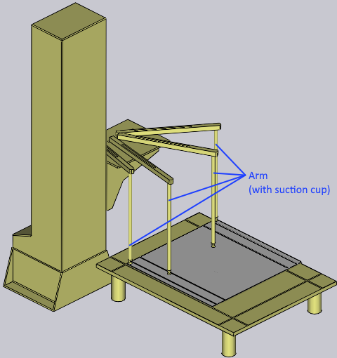
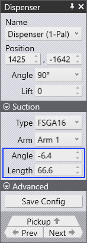

Pickup from a Dispenser
Small parts are handled using a mechanical gripper, also known as a Jaw gripper. If the part is smaller than about 200 x 300 mm, Flux RoboBend will automatically switch to a jaw gripper.
Depending on the part geometry, the jaw gripper with the corresponding loading situation is selected. If this is not the case, the gripper can also be added manually. This gripper can only pick up parts from a dispensing station.
Adding Cell Component - Dispenser Station
The Dispenser station (Sheet removal station) is available in three variations. These variations differ in the number of their pickup positions and the corresponding linear or rotational axis. The variant to be used must be inserted at the position, specified in the machine layout.
Procedure:
-
Open a sheet metal part.
-
Create bending program using the desired machine.
-
Insert the Dispenser station using the below mentioned steps:
-
Click Add icon from the command panel and select Cell component.
-
From the Component panel, choose a dispenser from the list.
-
Select Use for Pickup to enable the added component.
-
-
Save the configuration to the component database.
Using Jaw Gripper
Adjustments to the suction cups, gripper and part location can be made after choosing the loading scenario.
After creating the Bending process for a part, click twice on the pick up column P in the bend navigator to open the Pickup panel.
Alternatively, you can also click on the gripper, when the pickup stage is selected :
Various settings are used to control this process:
-
The position and orientation of the dispenser in the machine cell.
-
The orientation of the part on the dispenser.
-
The position and orientation of the jaw gripper on the part.
These settings are controlled using the Dispenser panel, the Pickup panel and the Gripper panel.
-
Click on the Dispenser to open the Dispenser panel.
Dispenser Panel
Click on the dispenser to open the dispenser panel. Flux RoboBend automatically deposits the part on the top left corner of the dispenser and also positions the suction gripper arms at the corners of the part. You can edit the arm configuration, and the dispenser location using this panel
| The part position cannot be changed, it must always be aligned to the top left corner. |
-
Use the Position option to change the values in the direction of Z, X axis and Angle settings to control the position and orientation of the dispenser, to make it match the actual position in the cell.
-
The Suction section is used to control the suction arm configuration.
| It is the operator’s responsibility to set the arms in a safer way; Flux RoboBend does not actually verify that the arm suction cups are positioned appropriately on the part because this configuration is not present in the NC code. |
-
Select an arm and edit the Angle and Length of an arm from the Dispenser panel.
-
Navigate to Pickup panel by clicking on the pickup navigation arrow.
 
Pickup Panel
Pickup panel is used to control the part orientation and the position of the gripper on the part.
-
Flip Part option rotates the part by 180°.
-
Align Edge option helps to align to the edge for holding the part in Z or X direction.
-
With the Rotate Part option, we can Rotate the part for the Gripper to hold. By default the part is rotated in 90° and with the Fine Position option, we can move the part in Z and X direction with the input value.
-
Also make sure, the Arm holding the part is properly placed over the part correctly. You can click over the Arm and move it closer to the part using the Dispenser panel
-
When you use the Rotate Part or Flip option, you may get the collision message (indicated by change in color of the component to RED). The same is also highlighted in Bend Navigator in the relevant column.
-
Fix the errors using the Pickup panel or the Dispenser panel to proceed further.
Gripper Panel (Jaw Gripper/ Mechanical Gripper)
| When using a dispenser to feed part into a bend machine, Flux RoboBend by default assigns a Jaw gripper. |
The Gripper panel is used to select a different gripper, or to change the position and orientation at which the gripper picks up the part.
| You can also access Gripper panel by using navigation link from the Pickup panel. |
-
Use the Name dropdown list to select a different jaw gripper.
-
Flux Robobend automatically selects the Gripper from the list which can be used for the part provided. Ensure if the selected Gripper best suits the requirement.
-
Position option moves the Gripper along Z & X direction and Angle option turns the gripper with respect to Y axis.
-
Select Use Vacuum Grip option to switch to a suction based gripper. Flux RoboBend automatically picks a suitable vacuum gripper available from the database.
-
Swivel Neck option highlighted in the below image, helps to rotate the Jaw Neck by 180°.
-
Slide Gripper option helps to slide the position of the Gripper.
-
Click on the Set Grip Plane and then move the mouse over the plane to set. As you hover over, a blue cross marker is visible on the plane to indicate it.
-
Click on the plane, and the gripper is moved to that plane (as seen in the image below). This function can be used both during the regrip cycle, and also during part pickup.
As you make these changes, Flux RoboBend computes the collision status of the gripper with the punch, the die, the part, and other components in real time for all bends and displays this in the navigator on the top. Thus, it is very easy to try different gripper positions, with immediate feedback.